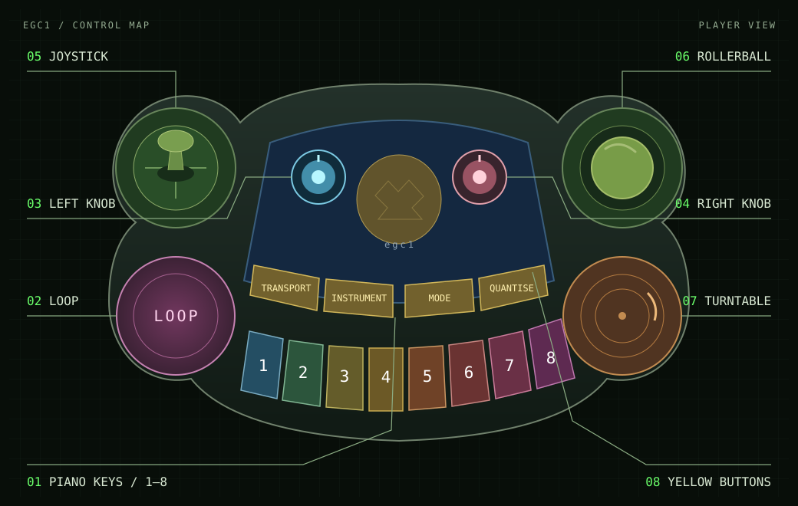
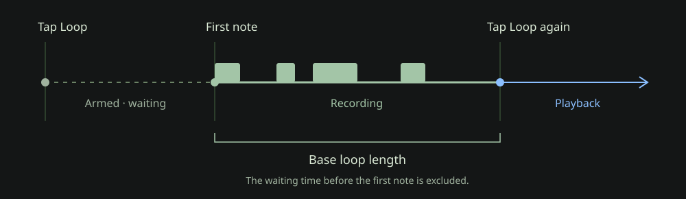

egc1 / User guide
A small instrument.
A lot to play with.
Eight instruments, live looping, sampling, and hands-on effects. Get to know the whole instrument: the ToySequencer controls and the ToySampler sound engine working together.
01 / Start here
Your first loop
Start with a beat. The first phrase you record sets the length that everything else follows.
- Let it wake up.
Connect the instrument to your audio setup, turn the listening level down, and power it on. Wait for the key-and-knob startup animation to finish: the controller allows roughly a minute for the sound engine to boot. Then bring up the listening level.
- Choose the first drum instrument.
Hold Instrument, tap piano 1, then release Instrument. The selected channel’s key flashes. In Play mode, the eight piano keys now play drum sounds.
- Arm the recording.
Tap the big purple Loop button. Recording waits for your first note, so there is no need to rush.
- Play a phrase, then close the loop.
Play a rhythm. Tap Loop again exactly where the phrase should repeat. The time from your first note to this press becomes the base loop. Playback begins immediately.
- Add another part.
Hold Instrument and tap 5 for a sampled synth. Release Instrument, tap Loop to arm, play along, and tap Loop to keep the take.
- Stop and start.
Click the Left knob to stop. Click it again to restart from the beginning. Turn it to balance the selected instrument’s level.
First-loop timing is yours. There is no count-in or automatic bar rounding. Count a phrase you can comfortably repeat and press Loop on its next downbeat.
02 / Front panel
Meet the controls
Read the panel with the piano keys along the bottom. The four yellow buttons run Transport → Instrument → Mode → Quantise from left to right. In this guide, “hold + tap” means keep the first control held while pressing the second.


- 01 / Piano keys
- Play notes in Play mode; switch channels on and off in Channel mode. With a modifier held, select an instrument, loop length, or quantisation grid.
- 02 / Purple Loop button
- Arm a note recording and finish a take. Also works with Transport for full-loop notes and Instrument for audio sampling. Holding it clears material; see clearing.
- 03 / Left knob
- Turn for selected-channel volume; click for stop/start. Hold Transport while turning for global tempo. Hold Instrument while turning for the selected melodic channel’s octave.
- 04 / Right knob
- Turn to set the selected effect amount. Click to alternate between the two parameters in a joystick direction. Hold Instrument while turning to change the melodic root note.
- 05 / Joystick
- Hold a direction to engage its effects. Turn the right knob to adjust them. Return to centre to restore the resting values, unless you have latched them.
- 06 / Rollerball
- Press for a master backspin on the recent mix, returning to live audio at the next bar. This needs the backspin firmware and sound-engine configuration; see performance.
- 07 / Orange turntable
- Its switch resets the session. Modifier combinations give it more selective reset and note-off actions. Treat an unmodified press as destructive.
- 08 / Yellow buttons
- Transport, Instrument, and Quantise modify other controls while held. Mode switches between playing notes and switching channels.
Read the left-knob light
| Colour | Transport state |
|---|---|
| Blue | Stopped |
| Red | Recording notes |
| Green | Playing |
| Magenta on both knobs | Instrument modifier held: octave and root-note controls |
The purple button lights when note recording is armed and also gives loop-position feedback during playback. Key LEDs show notes in Play mode and enabled channels in Channel mode.
03 / Sound sources
Eight instruments, one keyboard
Hold Instrument + tap piano 1–8 to select a channel. Release the modifier before playing. Selection changes which channel the knobs and keyboard control; it does not stop the other channels.
| Key | Instrument | How it plays | Recording default |
|---|---|---|---|
| 1 · 2 | Drums 1 · 2 | Eight drum voices, one per piano key. | Overdub |
| 3 · 4 | Loops 1 · 2 | Eight equal slices of a selected sample. Sample playback follows loop timing. | Overdub |
| 5 · 6 | Sampled synths 1 · 2 | A selected sample pitched across a scale; natural minor at startup. | Replace the recorded region |
| 7 | 303 synth | An acid-style synth with its own instrument-effects map. | Overdub |
| 8 | Recorded / Vocal | Live-captured audio or loaded vocal samples, split into eight slices. | Overdub |
Change the selected sound
On the backspin firmware, hold Instrument and click the Left knob. Each click advances the sound choice for the selected sampler channel. It changes the drum-kit selection, loop, synth sample, or recorded sample; the 303 uses its synthesis controls instead.
Sound lists are shuffled when loaded, so a fixed sound number does not identify the same sample after every restart. The controller’s session reset preserves the sound-choice values and selected channel.
Two keyboard modes. Tap Mode to enter Channel mode, where keys toggle channels. Tap it again to return to Play mode. Channel mode also selects the instrument-effects bank; Play mode selects the mix-effects bank.
Turning off a drum, synth, or 303 channel stops its sequenced notes. Loop and recorded channels are muted at the audio output, so their position can continue underneath. Turning a channel off preserves its recorded notes.
04 / Note looping
Building a recording
The sequencer remembers your key presses and releases. ToySampler turns those notes into sound. Recording notes and sampling incoming audio are separate actions.
Arm → play → keep
Tap Loop to arm. The first note starts capture on its channel; waiting before that note does not replace existing material. Tapping Loop again before you play cancels arming. Once recording has started, tap Loop to keep the take and return to playback.
When you finish while holding a key, the live note ends at the button press. Release and press the key again to play another live note.

Overdub or replace
Drums, loops, 303, and recorded audio channels overdub: new notes are added to stored notes. The two sampled-synth channels replace: the part of the old loop covered by the new take is replaced, including rests. The remainder stays. An older overlapping note of the same pitch on that channel is removed as a whole.
Long takes and the rolling window
Once a base loop exists, capture retains up to the current transport length. If you keep playing beyond that, older material falls out of the retained window.
At a whole transport-length boundary measured from the take’s first note, recording can freeze when all keys are released. Your phrase then waits without being erased by continued silence. Press Loop to keep it. Playing again resumes capture, includes the elapsed silent gap, and establishes a new boundary anchor. Held keys prevent freezing; stored note lengths are limited to one loop.
Finish before changing length or stopping. A transport-length change during a take discards that unfinished take and re-arms at the new length. Stop also discards unfinished capture. Stored loops remain.
05 / Shared time
Loop length, tempo & quantise
Extend the transport
After your first loop, hold Transport and tap a piano key to choose a multiple of that base loop. This gives you room for a longer phrase while shorter recorded parts keep repeating.
The length becomes part of a channel’s timing when you finish its take. Resizing the transport does not erase saved notes; shortening can hide later notes, and growing it can expose them again. Selecting a length before any base loop exists has no effect.
Change the pace
Hold Transport and turn the Left knob for global tempo. Its neutral value uses the pace of your original recording; the control ranges from half speed to almost double speed. Loop and recorded-sample playback also changes speed and pitch with tempo.
Snap the selected channel’s attacks
Hold Quantise and tap a piano key. The numbers below are equal divisions of that channel’s loop, rather than fixed beat-note names. Quantisation starts off and preserves the captured timing, so choosing Off restores the original feel.
Make one note fill the loop
With normal note recording unarmed, hold Transport and tap Loop to arm a full-loop note. Release Transport, then play a note: it is stored from the channel-loop start for the whole loop duration. The command is a toggle, so the same combination cancels it before a note is played. With no existing loop, it uses a six-second base loop.
Use full-loop notes for sustained loop samples. The audible duration still depends on the sound: a one-shot drum does not become a continuous tone.
06 / Incoming audio
Make the outside world a sound
Channel 8 is the recorded-audio instrument. Capture an incoming signal, then play its eight slices from the keyboard.
- Set up the source.
Feed audio to the sound engine’s configured input. Select channel 8 with Instrument + piano 8. Make a note loop first if you want the sample length to follow your own timing.
- Start sampling.
Hold Instrument and tap Loop, then release the modifier. Audio capture always targets channel 8, even if another channel was selected.
- Stop sampling.
Tap Loop on its own. This requests the end of audio capture; it does not arm a note take while the controller’s audio-recording state is on. Instrument + Loop also toggles capture off.
- Play what you captured.
Allow the sound engine to complete the capture. It selects the new sample and divides it into eight equal slices. In Play mode, use the piano keys to trigger them. You can then record those key presses as a sequenced part.
The stop is loop-based. The recorder finalises at a base-loop multiple measured from the start of capture. This is separate from pressing Loop to finish a note take, which finishes immediately.
ToySampler has 16 reusable live-recording buffers, each sized for up to 60 seconds. Captures are normalised when finished. These buffers are held in memory and reused as you record more; there is no panel command to save a recording to disk. Keep an external recording of a performance you want to retain.
The audio input comes from the host’s routing. The toy’s original microphone and speaker are not a guarantee of the current audio connections. If a capture is silent, check the sound-engine input and routing.
07 / Shape the sound
Joystick & effects
Each direction has a pair of parameters. Hold the joystick direction and turn the Right knob to adjust the selected parameter. Click the right knob to select the other member of the pair. The shift selection stays in place after you release the knob button.
For pairs of continuous parameters, both engage while the joystick is held. The knob changes one at a time. Repeat and Reverse are selected separately because Reverse is an on/off effect.
Mode chooses the bank. Play mode uses mix effects (Set B). Channel mode uses sampler or 303 effects (Set A). Tap Mode to switch. These maps are a reference; selecting a map here does not control the instrument.
Play mode · Mix effects · Set B
All eight channels. First line: normal selection. Second line: shifted selection.
Use compression to reshape dynamics, the gate for a tighter tail, and overdrive for distortion. The right-hand pair adds delay and reverb. Their audio processing comes from the effects in the sound engine’s host configuration.
Channel mode · Sampler effects · Set A
Channels 1–6 and 8. In this mode piano keys switch channels; existing loops keep playing.
Akai pitch and time use grain-based processing to change pitch and timing separately; grain size changes the texture. Playback pitch/speed changes both together. On loop and recorded channels, time and playback-speed controls use clean ratios: ¼×, ½×, 1×, 2×, and 4×.
Beat repeat engages while Down is held with Repeat selected; turn the knob for repeat speed. With the shifted Down selection, Reverse engages instead. Reverse is binary, so turning the knob does not change its amount.
Channel mode · 303 effects · Set A
Channel 7 only. Select it with Instrument + piano 7.
Start with cutoff and resonance, then shape the attack with envelope modulation, decay, and accent. Use Play mode for the same mix-effects bank as the other channels.
Keep an effect after releasing the joystick
While holding a direction, adjust the effect, then tap Quantise before releasing the joystick. This stores the pair’s current amounts as its resting values. For a binary effect, only the selected member is latched. Repeat-enable latching depends on firmware; see the version note below.
To clear the selected resting value, hold that joystick direction and Quantise, then click the Right knob. To clear all resting values in the current channel’s current bank, centre the joystick, hold Quantise, and click the right knob.
The remembered active amounts remain available for the next gesture. Clearing resting values is different from resetting the whole session.
Right-knob colours
Normal directions: Left red · Up green · Right blue · Down white. Shifted directions: Left magenta · Up yellow · Right cyan · Down unlit. An unlit shifted-Down indicator can therefore be normal.
08 / Melodic playing
Find a scale, move the root
The sampled synths and 303 start in natural minor. Hold Instrument to use the knobs and joystick as melodic controls:
| While Instrument is held | Result |
|---|---|
| Turn Left knob | Change the selected melodic channel’s octave. |
| Turn Right knob | Change the root within the octave across all channels whose scales are editable. |
| Joystick Left | Natural minor |
| Joystick Down | Minor pentatonic |
| Joystick Right | Phrygian |
| Joystick Up | Dorian |
Scale selection also applies across all editable melodic channels. Drums, loops, and recorded audio have fixed chromatic mappings, so these changes leave their voice and slice assignments intact. Changing a scale or root affects new playing; it does not transpose notes already stored in the sequencer.
09 / Live moves
Bring parts in. Take them out.
Switch channels without erasing them
Tap Mode for Channel mode. Each piano key toggles its corresponding instrument on or off; lit keys show enabled channels. Turn the left knob for the selected channel’s level. Tap Mode again to play notes.
Pull the mix backwards
On the backspin setup, press the Rollerball while the transport is running. ToySpinBack pulls the recent master mix backwards and slows it towards a stop, then hands back to the live mix at the next bar. The instruments and sequencer keep running underneath.
The effect acts on the whole mix. Repeated presses during an active backspin are ignored, and it does nothing while stopped. It requires ToySpinBack and the matching host routing; older firmware uses the rollerball press to change sounds instead.
Clear deliberately
| Gesture | Result |
|---|---|
| Hold purple Loop | Invokes clear after roughly half a second. In recording state this discards the unfinished take; otherwise it clears the selected channel’s stored notes. If no stored notes remain, the sequencer resets. |
| Press orange Turntable | Reset the whole note session, transport, mixer, effects, and channel defaults. Selected channel and sound-choice values are preserved. |
| Hold Mode + press Turntable | Clear and restore defaults for the channels currently switched off. Mode changes as soon as you press it, so check the lit channel keys before pressing the turntable. |
| Hold Instrument + press Turntable | Send All Notes Off to the selected channel. This ends sounding notes without deleting the sequence; playback can trigger them again. |
Loop reacts on press, then on hold. A long press is not a separate delayed gesture: its initial press still arms or finishes a take before the hold-clear action. There is no undo for cleared notes.
10 / Keep beside you
The quick reference
| Do this | To get this |
|---|---|
| Instrument + piano 1–8 | Select instrument channel. |
| Instrument + Left-knob click | Next sampler sound, on backspin firmware. |
| Purple Loop | Arm/cancel arming; finish a running note take; request stop if audio capture is active. |
| Left-knob click | Stop / restart from the beginning, once the sequencer has a loop. |
| Turn Left knob | Selected channel’s volume. |
| Transport + turn Left knob | Global tempo. |
| Transport + piano 1–8 | Transport length: 1, 2, 4, 8, 16, 32, 64, 128 base loops. |
| Transport + Loop, then a note | Store one full-loop note. |
| Instrument + Loop | Toggle audio capture on channel 8. |
| Mode | Play + mix effects ↔ Channel on/off + instrument effects. |
| Hold joystick + turn Right knob | Engage a direction’s effect and set its amount. |
| Right-knob click | Toggle the selected parameter within a direction’s pair. |
| Hold joystick, then tap Quantise | Latch current effect amounts as resting values. |
| Quantise + Right-knob click | Reset current bank’s resting values on the selected channel; with joystick held, reset only the selected parameter. |
| Quantise + piano 1–8 | Grid divisions: 12, 24, 48, 8, 16, 32, 64, Off. |
| Instrument + turn Left / Right knob | Selected melodic octave / shared melodic root. |
| Instrument + joystick | Shared melodic scale: Left minor, Down pentatonic, Right Phrygian, Up Dorian. |
| Rollerball press | Master backspin, with the matching firmware and sound engine. |
| Hold Loop / press Turntable | Clear selected material / reset session. Read the clearing details first. |
11 / Get back to playing
Something quiet?
The piano keys switch lights but do not play notes.
You are probably in Channel mode. Tap Mode to return to Play mode, and release any modifier buttons. Select an instrument with Instrument + a piano key.
I can play live, but the loop is silent.
Click the left knob if stopped. Check the channel is on in Channel mode, its volume is up, and a take was finished with Loop. Shortening the transport can also hide saved notes that start outside the shorter length.
The entire instrument is silent.
Wait for startup to finish. Check your listening level and audio connections, enable a channel, and raise its volume. If needed, check that the sound engine is running and receiving MIDI. The Arduino controls and the audio engine are separate parts of the instrument.
The joystick changes the wrong thing.
Check Mode first: Play uses mix effects, Channel uses sampler or 303 effects. Then check the right-knob shift selection. Release Instrument to leave scale selection. Clear latched effects with Quantise + a right-knob click at joystick centre.
The effect disappears when I let go.
That is the normal momentary gesture. While the joystick is still held, tap Quantise to latch its resting values. Some older firmware does not preserve Repeat’s enable state when latching, even though it remembers the speed.
The recording kept waiting, or my take changed.
Arming waits for the first note. Later takes can freeze at their loop-length boundary when no keys are held; they still need Loop to be kept. Playing again resumes capture and includes elapsed silence. Changing transport length during a take discards it and re-arms.
My new audio sample is silent.
Check the audio engine’s configured input and its level. Audio sampling is Instrument + Loop, distinct from note recording. Request a stop, allow capture to finalise at its loop multiple, select channel 8, and return to Play mode.
The rollerball changes sounds instead of doing a backspin.
You have the earlier control mapping. That version uses rollerball press for sound advance. The newer mapping moves sound advance to Instrument + a left-knob click and reserves rollerball press for ToySpinBack. The matching master effect and routing must also be installed.
A note is stuck.
Hold Instrument and press Turntable to send All Notes Off to the selected channel. Release the keys before playing again. If the sequencer is running it can trigger saved notes again; stop with a left-knob click when needed.
12 / Under the lid
One instrument, two working halves
ToySequencer reads the physical controls, records notes, maintains the loop clock, and sends MIDI. ToySampler supplies drum, loop, pitched-sample, and recorded-audio playback. The 303 and mix effects run alongside it in the audio host. ToySpinBack is the optional master backspin effect.
Preparing a sample library
The sampler reads WAV files from its configured DrumPath, LoopPath, SynthPath, and VocalPath folders. DrumPath contains Kick, Snare, Clap, Tom, Hi-Hat, Cymbal, and Other subfolders; both Tom voices read the Tom folder. Use mono or stereo WAV files shorter than 60 seconds and match the audio-engine sample rate: the supplied Elk configuration uses 48 kHz. Loaded samples are normalised and their ordering is shuffled. Folder paths belong to the host/plugin setup, rather than a panel menu.
Firmware and manual versions
This edition follows the inspected ToySequencer checkout with Instrument + left-knob sound selection and rollerball backspin, together with ToySampler and its Elk/Sushi configuration. The older master mapping assigns sound advance to the rollerball. Repeat-enable latching also differs between inspected branches. Backspin requires the matching ToySpinBack plugin and host configuration; its presence in source does not confirm what is installed on a particular instrument.
Prepared 26 October 2026. Control reference: ToySequencer 49b2b71; bundled ToySampler 240bcf2, cross-checked with the standalone ToySampler checkout ee53283. Physical yellow-button order confirmed by the instrument’s owner. Diagrams are original vector drawings.